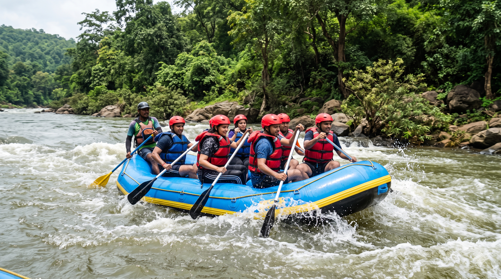
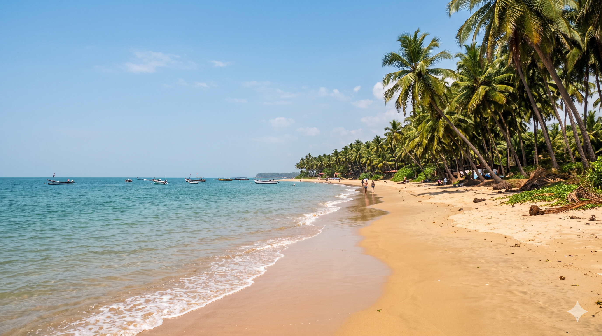
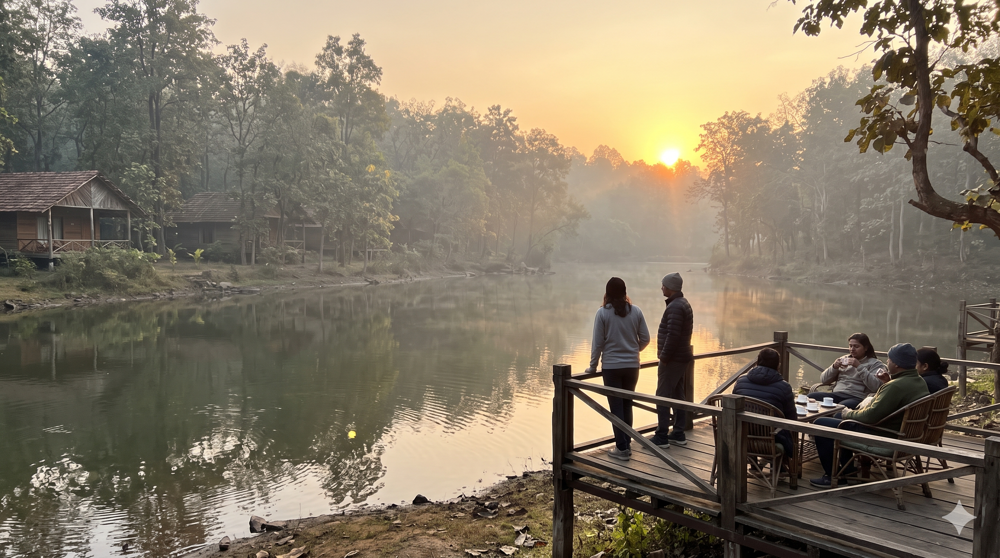
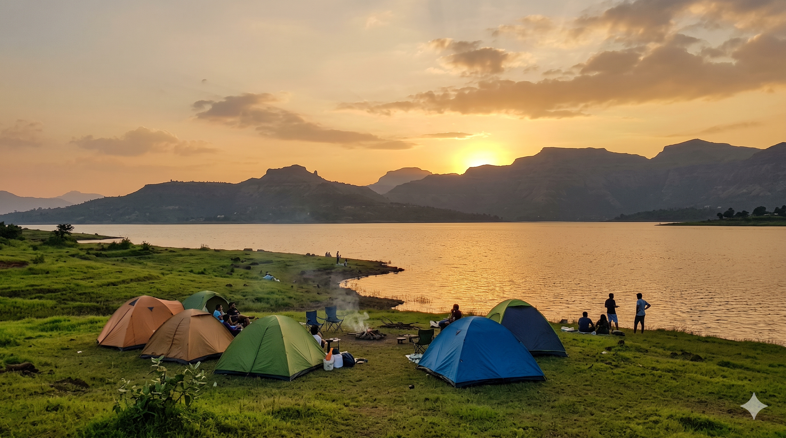
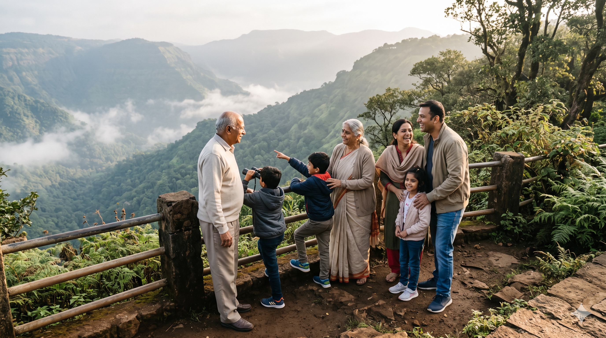
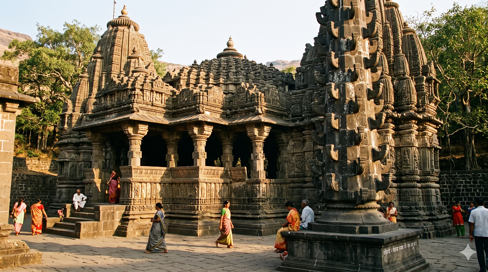
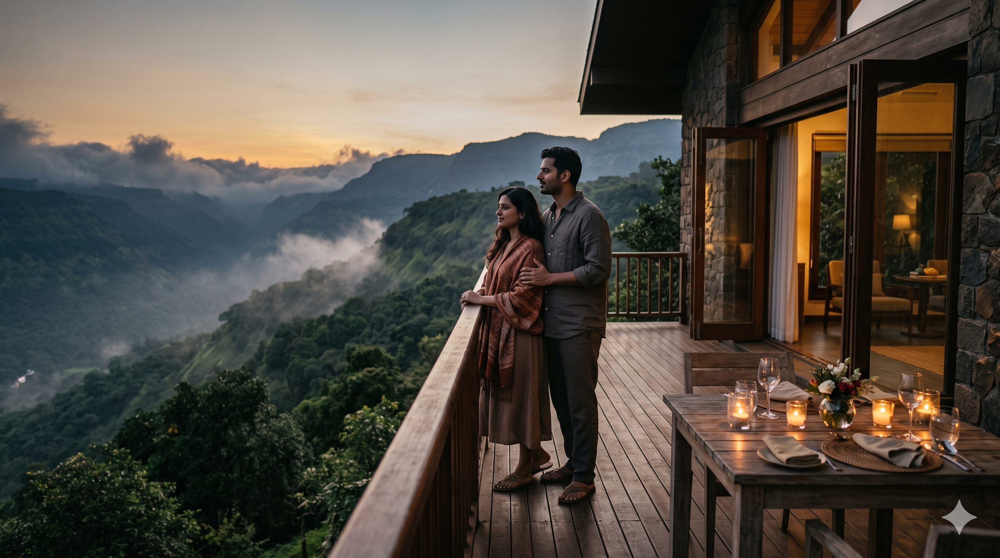
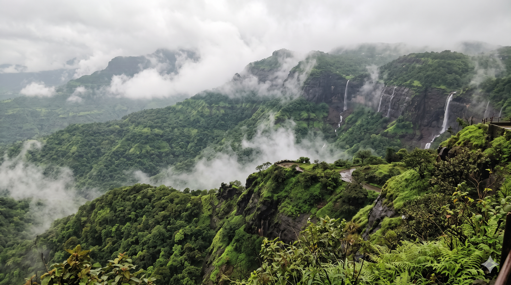

Introduction to Tourist Places in Maharashtra
Maharashtra is one of India's most varied travel states. In a single trip you can watch a tiger at dawn in Tadoba, trek to a hill fort in the Sahyadris, stand inside ancient rock-cut caves at Ajanta and Ellora, enjoy monsoon waterfalls near Lonavala and finish the week on a quiet Konkan beach. The best tourist places in Maharashtra cover hills, beaches, forts, temples and adventure, so there is a destination for every kind of traveller.
Planning is the hard part. Distances are long, seasons change what is open, and the same destination can feel completely different in July and in January. This guide groups the state's top destinations by travel style, the same way our packages are organised, and gives you the approximate distance, best time to visit and what each place is known for.
Mahakali Travels, based in Nagpur, plans road trips from Nagpur, Pune and Mumbai using vehicles from our fleet. Distances in this guide are measured from Nagpur, with Pune distances added where it helps, and they are approximate road distances. Use this page to shortlist your destination, then confirm your exact route on a maps app before you travel.
Quick Comparison: Top Tourist Places in Maharashtra
Use the table below to compare destinations by distance, best travel season, and what they are known for.
| Destination | Distance from Nagpur | Best Time to Visit | Known For |
|---|---|---|---|
| Ramtek | About 50 km | October to February | Hilltop temple, old fort, lake views |
| Pench Tiger Reserve | About 90 km | October to June | Tiger and wildlife safaris |
| Tadoba Andhari Tiger Reserve | About 140 km | October to June (best sightings March to May) | Tiger safaris, jungle stays |
| Chikhaldara | About 230 km | July to February | Vidarbha's hill station, coffee, viewpoints |
| Ajanta and Ellora Caves | About 500 km (to Chhatrapati Sambhajinagar) | October to March | UNESCO rock-cut caves, Kailasa Temple |
| Shirdi | About 520 km | October to March | Sai Baba Samadhi Mandir |
| Nashik and Trimbakeshwar | About 680 km | October to March | Jyotirlinga, Godavari ghats, vineyards |
| Lonavala | About 780 km | June to September | Waterfalls, viewpoints, forts, caves |
| Mahabaleshwar | About 850 km | October to June | Viewpoints, strawberries, Panchgani |
| Tarkarli (Konkan) | About 1,050 km | November to February | Clear water, scuba, Sindhudurg Fort |
Adventure & Rafting Destinations in Maharashtra

Maharashtra is the best state in western India for adventure, and most of it sits in the Sahyadri range. The most popular rafting spot is Kolad on the Kundalika River, about 120 km from Pune and roughly 120 km from Mumbai. During the monsoon, from about June to September, controlled water releases create Grade 2 and 3 rapids that suit beginners and families as well as thrill seekers. Most rafting packages add riverside camping, zip-lining and other activities.
If you prefer treks, the choice is wide. Rajmachi near Lonavala (about 80 km from Pune) is an easy to moderate fort trek that is especially lovely in the monsoon. Kalsubai, the highest peak in Maharashtra at about 1,646 metres, is a moderate climb with iron ladders near the top, around 180 km from Pune near Bhandardara. Harishchandragad (about 150 km from Pune) is known for its Konkankada cliff and cave temples, with routes ranging from moderate to hard. The Alang, Madan and Kulang (AMK) group near Igatpuri is a difficult, technical trek meant only for experienced trekkers with proper gear and guides.
Adventure spots are far from Nagpur, so most travellers plan a longer trip that combines trekking, rafting and a hill-station stay. Winter, from October to February, is best for clear trek views, while the monsoon is the season for rafting and green trails. For something closer to home, a jungle safari at Tadoba or Pench gives you an adventure fix within a few hours' drive of Nagpur.
Safety, gear and group trips: Choose operators who provide helmets, life jackets and trained guides, and never raft when the river is in flood. Carry quick-dry clothes, a change of clothes, sturdy trekking shoes with good grip, a cap, sunscreen and a waterproof pouch for your phone. Start treks early, carry enough water, and avoid fort trails right after heavy rain because they become slippery. Group trips are easier and safer when everyone travels in one planned vehicle with a driver who knows the route, so nobody has to organise pick-ups or worry about the return. Mahakali Travels can arrange group vehicles and customised adventure itineraries for friends, colleagues and families.
Beach & Water Sports Destinations in Maharashtra

Maharashtra's Konkan coast has a long line of clean, quiet beaches with far fewer crowds than Goa. Near Mumbai and Pune, Alibag (about 140 km from Pune), Kashid, Murud and Diveagar are easy beach breaks with soft sand, sea views and fresh seafood. Murud is also the gateway to the Janjira sea fort. Further south, Ganpatipule (about 330 km from Pune) combines a beach with the well-known Swayambhu Ganpati temple.
Tarkarli and Malvan in the Sindhudurg district, around 400 km from Pune and roughly 1,050 km from Nagpur, are the state's best-known water sports destination. Tarkarli offers scuba diving, snorkelling, jet-skiing, banana-boat rides and dolphin-spotting boat trips, and the water is clear enough to see marine life close to the shore. You can also visit Sindhudurg Fort by boat from Malvan. The best weather runs from November to February, when the sea is calm and water sports are fully open.
Konkan food is a highlight too. Try Malvani fish thali, fried surmai or pomfret, kombdi vade and solkadhi, a cooling kokum and coconut drink. Seafood is freshest at small family-run restaurants near the beach, and homestay meals are often the best of the trip.
Stay options and how to reach: Choose between beachside resorts, family-run homestays and budget lodges, and book early for December weekends and long holidays. From Nagpur the coast is a long way, so many travellers take a train or flight to Pune or Mumbai and continue by road, which saves a full day. Konkan Railway stations such as Kudal, Sindhudurg and Kankavli serve the Malvan and Tarkarli area. Water sports usually pause during the monsoon, so confirm operator availability before booking. Swim only in marked safe zones, follow lifeguard instructions and use certified scuba and snorkelling operators.
Weekend Getaways from Nagpur & Pune

A good weekend break does not need a long drive. From Nagpur, Ramtek (about 50 km) has a hilltop temple, an old fort and peaceful viewpoints, while Pench Tiger Reserve (about 90 km) and Tadoba Andhari Tiger Reserve (about 140 km) make a full two-day safari trip. Chikhaldara (about 230 km), Vidarbha's hill station, offers coffee estates, misty viewpoints and the old Gawilgarh Fort. Each is an easy 1N/2D trip with safari or sightseeing on both days.
From Pune, the Sahyadri hills are the classic weekend escape. Lonavala (about 65 km, around 1.5 hours) is perfect for waterfalls, Bhushi Dam and the Karla and Bhaja caves. Mahabaleshwar (about 120 km, around 3 hours) is known for Arthur's Seat, Venna Lake and fresh strawberries, with Panchgani next door. Bhandardara (about 180 km) offers Arthur Lake, Randha Falls and a peaceful setting. Igatpuri (about 200 km), Jawhar (about 300 km) and Amboli (about 340 km) are quieter options with waterfalls and misty ghats, best in the monsoon and just after it.
For a 1N/2D trip, choose one destination and avoid packing in too much. Leave early on Saturday, spend the day sightseeing, stay overnight and return on Sunday afternoon to beat the traffic.
What to see, seasonal tips and budget: The monsoon, from July to September, suits waterfalls and green hills, but tiger reserves are usually closed or restricted, so confirm opening dates before booking a safari. Winter is the most comfortable season for almost every destination, and summer is the best time to spot tigers. For budget stays, look at homestays and Maharashtra Tourism (MTDC) resorts at several hill stations. For a more luxurious weekend, choose hill-station resorts with valley views and spa facilities. Book early for long weekends, when the popular hill stations fill quickly.
Lakeside Camping in Maharashtra

Lakeside camping is one of the fastest-growing travel trends in Maharashtra. Near Pune, Pawna Lake (about 60 km, and about 780 km from Nagpur) is the most popular spot, with tents on the shore, bonfires, barbecue dinners and views of the Tikona and Lohagad hills. Mulshi Lake (about 45 km from Pune) is quieter and scenic, surrounded by green hills and small villages. Bhandardara and its Arthur Lake (about 180 km from Pune) are known for sunrise views, waterfalls like Randha Falls and some of the clearest night skies near Pune and Mumbai.
Riverside camping at Kolad (about 120 km from Pune) combines tents with rafting and other activities. Closer to Nagpur, Khindsi Lake near Ramtek (about 55 km) is good for a short outing, picnic and boating, and the reservoirs around the Pench region work well for a quiet lakeside stay combined with a safari.
A typical camping package includes tent stay, dinner, breakfast, campfire and light activities. Many campsites add kayaking, cycling, board games and stargazing. For the best stargazing, choose a clear winter night and a campsite away from town lights, ideally around the new moon.
Safety, operators and what to pack: Choose campsites with clean washrooms, safe tents and a clear safety policy, and check whether the operator is registered and has first-aid support. Tents are the budget choice, while glamping gives you proper beds, attached washrooms and more privacy, which suits families and couples. Group camps are best for friends and colleagues who want games, music and a larger campfire. Winter nights near lakes get cold, so pack a jacket, warm socks, a torch, insect repellent, a power bank and a small first-aid kit. Light campfires only in designated areas, never swim without life jackets and trained staff nearby, and take your waste back or use the bins provided.
Family Holiday Destinations in Maharashtra

A good family holiday balances sightseeing, comfort and free time, and Maharashtra makes this easy because hill stations, heritage sites and temples can be combined in one road trip. Mahabaleshwar (about 850 km from Nagpur) suits all ages, with boating at Venna Lake, horse rides, strawberry farms and easy viewpoints. Lonavala (about 780 km) is ideal for children, with waterfalls, Bhushi Dam, wax museum visits and short drives between sights.
Chhatrapati Sambhajinagar (Aurangabad), about 500 km from Nagpur, is the base for the Ajanta and Ellora Caves and also has Bibi Ka Maqbara and Daulatabad Fort. Ellora is about 30 km from the city and Ajanta about 100 km, so plan two days. Shirdi (about 520 km) and Nashik (about 680 km) add temple visits, and Nashik's vineyards and Pandavleni Caves give variety.
A popular family route runs from Nagpur to Chhatrapati Sambhajinagar for the caves, then Shirdi and Nashik, and finishes at Lonavala or Mahabaleshwar for a cool, scenic ending. Add a jungle safari at Tadoba or Pench for children who love animals. Plan one major activity per day and leave afternoons free for rest, since long highway stretches are tiring for young children and elders.
Planning tips for elders and young children: Choose an air-conditioned vehicle with enough boot space for luggage and a driver who is comfortable with long routes. Plan meal stops every 2 to 3 hours at clean, family-friendly restaurants, carry snacks, water and basic medicines, and book hotels with family rooms and lift access. Check closing days, since Ajanta is closed on Mondays and Ellora on Tuesdays. Mahakali Travels offers family packages with comfortable vehicles such as Innova and Ertiga, depending on group size.
Ashtavinayak & Temple Tours in Maharashtra

The Ashtavinayak Yatra covers eight ancient, self-manifested Ganpati temples around Pune. They are Moreshwar (Morgaon), Siddhivinayak (Siddhatek), Ballaleshwar (Pali), Varadavinayak (Mahad), Chintamani (Theur), Girijatmaj (Lenyadri), Vighnahar (Ozar) and Mahaganapati (Ranjangaon). Pune is about 720 km from Nagpur. From Pune, approximate distances are Theur 25 km, Ranjangaon 50 km, Morgaon 65 km, Ozar 85 km, Lenyadri 95 km, Siddhatek 100 km, Pali 110 km and Mahad about 130 km.
The traditional order starts and ends at Moreshwar in Morgaon: Morgaon, Siddhatek, Pali, Mahad, Theur, Lenyadri, Ozar and Ranjangaon, then back to Morgaon to complete the yatra. By road, the full circuit usually takes two to three days from Pune. Most temples open early in the morning and close at night, but timings vary and change on festival days, so check each temple's official timings before you go. Lenyadri involves a climb of several steps, so it needs extra time and care for elders.
Closer to Nagpur, Vidarbha has its own Ganesh temples, including Tekdi Ganpati in Nagpur and the Adasa temple, which make a good short yatra if time is limited.
Other temples and pilgrim tips: Combine the yatra with Shirdi (about 520 km from Nagpur), Nashik and Trimbakeshwar (about 680 km, one of the twelve Jyotirlingas), Pandharpur (about 210 km from Pune) and Tuljapur (about 270 km from Pune). Dress modestly, remove footwear at the entrance, keep phones and valuables to a minimum and carry a small bag, since many temples restrict large bags. Go on weekdays and start early to avoid long queues, and plan shorter driving days for elders. Mahakali Travels offers temple tour packages with comfortable vehicles, planned stops and drivers who know the temple routes.
Honeymoon Special Destinations in Maharashtra

Maharashtra has romantic settings for every kind of couple. Mahabaleshwar (about 850 km from Nagpur) offers misty viewpoints, strawberry farms and boat rides on Venna Lake, with Panchgani close by for table-land views. Lonavala (about 780 km) is a scenic escape known for its misty ghats and monsoon greenery, with quiet resorts and valley-view rooms. Matheran, a car-free hill station near Mumbai, feels especially peaceful and is popular with couples who want a slow, quiet break.
For a beach honeymoon, the Konkan coast is far more relaxed than the busy resort towns. Alibag (about 880 km), Ganpatipule and Tarkarli (about 1,050 km) have beachside resorts, sunset walks and fresh seafood. Closer to Nagpur, Chikhaldara (about 230 km) is a quiet hill getaway with coffee estates and sunset points, ideal for a short honeymoon break.
Many couples combine a hill station and a beach in one trip, such as Mahabaleshwar followed by Tarkarli, which gives cool air and sea views in the same itinerary. Luxury stay options include hill-station resorts with private balconies, pool villas and spa services, and beachfront resorts with candlelight dinners on the sand, which many resorts arrange on request.
Privacy, timing and private cabs: For more privacy, travel in the off-peak months or on weekdays and avoid long weekends and festival periods. Book resorts and private stays well in advance, especially from December to February. A private cab with a driver means you can stop at viewpoints when you like instead of changing buses. Mahakali Travels offers honeymoon packages with comfortable vehicles such as the Innova Crysta, with the route, stays and surprises planned around you. Keep one or two days free with no fixed plan.
Scenic Ghat Road Trips in Maharashtra

The Western Ghats (Sahyadri) are best explored by road. Malshej Ghat, between Pune and Mumbai, is famous for waterfalls and misty valleys in the monsoon, and for flamingos at the nearby reservoir in winter. Tamhini Ghat near Pune is a favourite for waterfalls and lush green views. Kasara Ghat (Thal Ghat) on the Mumbai to Nashik route offers sweeping curves and views of trains on the line below. Amboli Ghat in Sindhudurg is one of the wettest places in the state, with waterfalls visible right from the road and thick forest all around.
Other well-known routes include Amba Ghat near Kolhapur, which leads into Konkan forests, and Varandha Ghat on the Pune to Mahad road, with sweeping viewpoints. From Nagpur, the Samruddhi Mahamarg expressway takes you towards Nashik, and the ghat sections beyond it open the Sahyadri region. During the monsoon, many roads have temporary waterfalls streaming down the hillside, which makes the drive memorable.
Plan stops at safe viewpoints and small tea and snack stalls along the way, and keep time for photographs. Ghat drives are best done as part of a longer trip rather than a single day.
Road trip tips for the ghats: Choose a powerful, comfortable vehicle such as the Innova Crysta for steep climbs and hairpin bends, and a driver experienced in ghat driving. Drive slowly, use low gears on descents, keep a safe distance and never overtake on curves. Avoid ghat roads at night and in heavy rain or dense fog, and watch for landslide-prone patches in the monsoon. The best time of day is mid-morning to late afternoon, when visibility is good. Pack rain gear, snacks, water, a first-aid kit, a power bank and offline maps because mobile signal can be patchy.
Best Time to Visit Maharashtra
Maharashtra has a tropical climate with three distinct seasons: the monsoon, a pleasant winter and a hot summer, with a lovely post-monsoon window between them. The best time to visit changes with the kind of trip. Beaches are best from November to February, hill stations and waterfalls shine from July to September, temples and caves are most comfortable between October and March, and adventure activities depend on the season, with rafting in the monsoon and trekking in winter.
Monsoon (Jun–Sep)
Ghats, waterfalls and adventure rafting are at their best. Hill stations turn lush green. Avoid beaches, sea water sports and tiger reserves, since most are closed or restricted. Drive carefully on ghat roads.
Post-Monsoon (Oct–Nov)
Greenery is still visible and the weather is comfortable. Ideal for almost every destination, including temples, hill stations and forts. Tiger reserves reopen and the Konkan coast starts to open up.
Winter (Dec–Feb)
Peak tourist season with pleasant temperatures across Maharashtra. Best for Mahabaleshwar, forts, camping, temples and beaches. Book hotels, safaris and campsites early.
Summer (Mar–May)
The plains are hot, especially around Nagpur, but hill stations like Mahabaleshwar and Chikhaldara stay cooler. This is the best time to spot tigers at Tadoba and Pench. Pre-season discounts are often available.
Travel Tips for Visiting Tourist Places in Maharashtra
Essential Travel Tips
- Book accommodation, safaris and campsites 4 to 6 weeks in advance during Diwali, Christmas and long weekends, when popular destinations fill up fast.
- Carry a first-aid kit, motion-sickness tablets and basic medicines for ghat drives and adventure trips.
- Download offline Google Maps before entering hilly, forest or coastal areas where mobile signal is patchy.
- Pack light cotton clothes for summer and carry warm layers for hill stations and camping in December and January.
- Use a verified cab service like Mahakali Travels for safety, comfort and experienced drivers on long outstation trips.
- Respect temple customs: dress modestly, remove footwear, keep noise down and follow photography rules.
Frequently Asked Questions
What is the best time to visit tourist places in Maharashtra?
October to February is the best overall, with pleasant weather and all major attractions open. June to September is best for waterfalls, hill stations and rafting, and March to May is best for tiger sightings at Tadoba and Pench. Beaches are best from November to February.
Which tourist places in Maharashtra are best for families?
Mahabaleshwar, Lonavala, Ajanta and Ellora, Shirdi and Nashik are popular with families. Tadoba and Pench add a jungle safari that children enjoy. Plan one major activity a day and use a comfortable, air-conditioned vehicle for long drives.
How do I book a cab from Nagpur to Maharashtra tourist places?
Call or WhatsApp Mahakali Travels with your destination, travel dates and number of travellers. We will suggest a route, vehicle and package, and share a quote before you confirm.
How far is Shirdi from Nagpur?
Shirdi is about 520 km from Nagpur by road via the Samruddhi Mahamarg. The drive usually takes around seven to eight hours depending on traffic and stops.